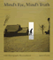
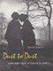
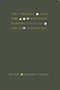
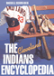
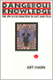
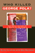

|
Legal
Bases
Baseball and the Law
Abrams,
Roger I.
Philadelphia Book Clinic Certificate of Award, 1999
|

|
African
Intellectual Heritage
A Book of Sources
edited
by Asante, Molefi Kete and Abu S. Abarry Philadelphia
Book Clinic Certificate of Award, 1997 |

|
Public
Art in Philadelphia
Bach,
Penny Balkin Philadelphia Book Clinic Certificate
of Award, 1993
National Gold Ink Pewter Award, 1993 |

|
Baseball
Managers
Stats, Stories, and Strategies
Bloss,
Bob Philadelphia Book Clinic Certificate of
Award, 2000 |

|
Pastoral
Inventions
Rural Life in Nineteenth-Century American Art and Culture
Burns,
Sarah
Philadelphia Book Clinic Certificate of Award, 1990
|

|
The
Braves Encyclopedia
Caruso,
Gary Philadelphia Book Clinic Certificate
of Award, 1996 |

|
Children
in the Field
Anthropological Experiences
edited
by Cassell, Joan Association of American University
Presses Book Jacket Award, 1988 |

|
The
Atlas of Pennsylvania
edited
by Cuff, David J., William J. Young, Edward K. Muller, Wilbur Zelinsky
and Ronald F. Abler Philadelphia Book Clinic
Certificate of Award, 1990
Association of American University Presses Book Jacket
Award, 1990 |

|
Mind's
Eye, Mind's Truth
FSA Photography Reconsidered
Curtis,
James Philadelphia Book Clinic Certificate
of Award, 1990 |
|
A is for Art Museum
Friedland, Katy and Marla K. Shoemaker Honorable mention in the AAM (American Association of Museums) design competition, 2008 |

|
Coming
of Age in Buffalo
Youth and Authority in the Postwar Era
Graebner,
William
Association of American University Presses Book Jacket
Award, 1990
|

|
Silver
Cities
The Photography of American Urbanization, 1839-1915
Hales,
Peter Bacon
Philadelphia Book Clinic Certificate of Award, 1985
|

|
Dust
to Dust
A Doctor's View of Famine in Africa
Heiden,
David Philadelphia Book Clinic Certificate
of Award, 1993 |

|
Rude Democracy
Civility and Incivility in American Politics
Herbst, Susan
Association of American University
Presses Book Jacket Award, 2011 |

|
The
Music of Our Lives
Higgins,
Kathleen Marie Philadelphia Book Clinic Certificate
of Award, 1991 |

|
The
Red Atlantis
Communist Culture in the Absence of Communism
Hoberman,
J. Association of American University Presses
Book Jacket Award, 1999
Philadelphia Book Clinic Certificate of Award, 1999 |

|
Child,
Parent, and State
Law and Policy Reader
edited
by Humm, Randall S., Beate Anne Ort, Martin Mazen Anbari, Wendy
S. Lader and William Scott Biel
Philadelphia Book Clinic Certificate of Award, 1995
|

|
Gardens
of Philadelphia and the Delaware Valley
Klein,
Jr., William M., photographs by Derek Fell
Philadelphia Book Clinic Certificate of Award, 1996
|

|
Engineering
Culture
Control and Commitment in a High-Tech Corporation
Kunda,
Gideon Association of American University
Presses Book Jacket Award, 1993 |

|
Images
of Appalachian Coalfields
Levy,
Builder, introduction by Helen Matthews Lewis, foreword by Cornell
Capa Philadelphia Book Clinic Certificate
of Award, 1990 |

|
The
White Sox Encyclopedia
Lindberg,
Richard C., photographs by Mark Fletcher
Philadelphia Book Clinic Certificate of Award, 1998
|

|
The
Wild Animal Story
edited
by Lutts, Ralph H.
Association of American University Presses Book Jacket
Award, 1999
|

|
Philadelphia's
Cultural Landscape
The Sartain Family Legacy
edited
by Martinez, Katharine and Page Talbott Philadelphia
Book Clinic Certificate of Award, 2001 |

|
Medical
Malpractice
Law, Tactics, and Ethics
McClellan,
Frank M. Philadelphia Book Clinic Certificate
of Award, 1995 |

|
Still
Philadelphia
A Photographic History, 1890-1940
Miller,
Fredric M., Morris J. Vogel and Allen F. Davis Philadelphia
Book Clinic Certificate of Award, 1984 |

|
Going
Down to the Barrio
Homeboys and Homegirls in Change
Moore,
Joan W. Philadelphia Book Clinic Certificate
of Award, 1992 |

|
Chanting
Down Babylon
The Rastafari Reader
edited
by Murrell, N. Samuel, William D. Spencer and Adrian Anthony McFarlane
Philadelphia Book Clinic Certificate of Award, 1999 |

|
The
Philadelphia Orchestra
A Century of Music
Philadelphia
Orchestra Assoc., edited by John Ardoin Philadelphia
Book Clinic Certificate of Award, 2000 |

|
Paradise,
New York
A Novel
Pollack,
Eileen Philadelphia Book Clinic Certificate
of Award, 1999 |

|
Echoes
from the Holocaust
Philosophical Reflections on a Dark Time
edited
by Rosenberg, Alan and Gerald E. Myers Association
of American University Presses Book Jacket Award, 1989 |

|
The
Person and the Situation
Essential Contributions of Social Psychology
Ross,
Lee and Richard E. Nisbett Association of
American University Presses Book Jacket Award, 1992 |

|
The
Cleveland Indians Encyclopedia
Schneider,
Russell
Philadelphia Book Clinic Certificate of Award, 1997
|

|
Dangerous
Knowledge
The JFK Assassination in Art and Film
Simon,
Art Association of American University Presses
Book Jacket Award, 1996 |

|
Incurably
Romantic
Stehle,
Bernard F., afterword by Joseph Schneider Philadelphia
Book Clinic Certificate of Award, 1986 |

|
No
Easy Walk
Newark, 1980-1993
Stummer,
Helen M. Philadelphia Book Clinic Certificate
of Award, 1995 |

|
Who
Killed George Polk?
The Press Covers Up a Death in the Family
Vlanton,
Elias with Zak Mettger Philadelphia Book Clinic
Certificate of Award, 1997 |

|
Cultural
Connections
Museums and Libraries of the Delaware Valley
Vogel,
Morris J. Philadelphia Book Clinic Certificate
of Award, 1992
Award of Distinction from the American Association
of Museums, 1992
National Gold Ink Gold Award, 1991
American Institute of Graphic Arts Certificate of
Excellence, 1991 |

|
Philadelphia
Preserved
Catalog of the Historic American Buildings Survey
Webster,
Richard J., introduction by Charles E. Peterson
Association of American University Presses Book Jacket
Award, 1977
|

|
The
Black Female Body
A Photographic History
Willis,
Deborah and Carla Williams National Gold Ink
Bronze Award, 2002 |

|
Hope
and Dignity
Older Black Women of the South
narrator
Wilson, Emily Herring, photographs by Susan Mullally Clark, preface
by Maya Angelou Philadelphia Book Clinic Certificate
of Award, 1984 |

|
Forklore
Recipes and Tales from an American Bistro
Yin, Ellen
Winner of the Gold ADDY Award — Publication Design — Cover, 2008
Winner of the Silver ADDY Award — Publication Design — Editorial Spread or Feature, 2008
Winner of a Pewter award in the 2008 Gold Ink Awards in the cookbook category |

|
We
the People
Young,
Alfred F. and Terry J. Fife with Mary E. Janzen Philadelphia
Book Clinic Certificate of Award, 1994 |

|
To
Save China, To Save Ourselves
The Chinese Hand Laundry Alliance of New York
Yu,
Renqiu
Philadelphia Book Clinic Certificate of Award, 1993
|

|
Art
for The Masses
A Radical Magazine and Its Graphics, 1911-1917
Zurier,
Rebecca, introduction by Leslie Fishbein
Association of American University Presses Book Jacket
and Illustration Award, 1989
|